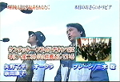
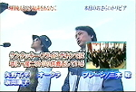
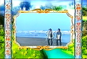
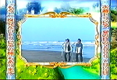

今なら載ってる、急いで～ﾀﾞｯｼｭ!ε≡≡ﾍ( ´∀`)ﾉ
ロックウェル「夏の日の1993」カバー<引用：日刊スポーツ>
９３年に１７０万枚を売り上げた大ヒット曲「夏の日の１９９３」が、１３年ぶりにカバーされる。若手実力派バンドｒｏｃｋｗｅｌｌ（ロックウェル）のデビュー曲「夏の日の２００６」で、２６日に発売。
５日放送のバラエティー番組「トリビアの泉」（フジテレビ系）で、ネタにからんで「夏の日の１９９３」が流れた。
懐かしいメロディーに反応した視聴者が多く、放送直後の着うたサイトで１位に躍進したばかり。
オリジナルを歌ったｃｌａｓｓの日浦孝則が「間奏、転調、リフレインなどの仕掛けにびっくりした」というカバーが本家超えなるか、注目される。
◆ｒｏｃｋｗｅｌｌ（ロックウェル） ボーカル黒田学（３０）とギター宍倉聖悟（３０）が０５年に結成。
米画家ノーマン・ロックウェルの画風に感動した宍倉が命名した。黒田は岡山県、宍倉は北海道生まれ。
あの名曲を大胆カヴァー！ 実力派バンドrockwellって？<引用：BARKS>
7月26日にシングル「夏の日の2006 -based on 1993-」でデビューする実力派バンド、rockwell。
中学生でギターに目覚めたというヴォーカルの黒田学は、高校時代からバンド活動をしており、大学在学中にCOATZ（コーツ）というバンドで一度メジャー・デビューを果たしたことがある。
同じく中学生のときから本格的にギターを始めたというギターの宍倉聖悟は、米国サンフランシスコのオースティンにてバンド活動をした後、フリーのギタリストとして様々なアーティストのレコーディングやライヴに参加していたという経歴の持ち主。
この２人がバンドを結成したと聞けば、気にならない人はいないだろう。そんな彼らのデビュー曲のタイトルに、懐かしさを感じる人もいるかもしれない。なぜなら、彼らのデビュー・シングル「夏の日の2006 -based on 1993-」は、1993年に２人組の男性ユニット“class”が歌い大ヒットさせた「夏の日の1993」のカヴァー曲なのだ。タイトルの年代を“2006”に変え、新たなアレンジで生まれ変わった今作は、黒田のポップでありながらロックな歌声と、宍倉のハイレベルなギター・テクニックが、さらに名曲をパワー・アップさせている。懐かしさの中に新しさを感じることができる作品だ。「夏の日の1993」をタイムリーに聴いていた人も、そうじゃない人も、ぜひ聴いて欲しい１曲。
カップリングには「台風０号」を収録。オリジナルのこの曲も、名曲に引けをとらない美しいメロディに仕上がっている。
今作のプロモーション・ビデオは、フィッシュマンズ、サザンオールスターズ、東京スカパラダイスオーケストラなどのミュージック・ビデオを手掛けてきた巨匠、川村ケンスケ氏が監督を務めている。
主軸となるストーリーが、アメリカのテレビ・ショウのパロディとなっていて、夏らしい爽やかな楽曲とは対照的なコミカルな映像がおもしろい。BARKSでは８月３日までの期間限定でPVフル視聴を公開するので、ぜひチェックを！
Vo.黒田学のポップでありながらロックな歌声と、Gt.穴倉聖悟のハイレベルなギターテクにより名曲がさらにパワーパップして生まれ変わる。<引用：livedoor musicアーティスト特集>>
事務所の社長から「ちょっとカバーをやってみないか」と言う言葉がでるまで、本人たちにも全くの想定外。オリジナルをやっているバンドとしては、当初は抵抗感もあった。
しかし、1993年当時二人は高校生、タイムリーにこの楽曲を聞いていた世代である。懐かしさも手伝い、真剣に楽曲を聞くにつれ、この曲が持つパワーの様な物を感じ、「これは面白くなるかもしれない」、そんな予感が彼らの中に沸いてきた。
ちょっと懐かしいものが、斬新なものとして受け入れられる今の時代だからこそ、敢えてトライしてみたい！
そう考えるに至ったのである。こうしてレコーディングが進み、想像以上に良いものが出来上がっていく。これは世に出してみたい。
スタッフを含めた全員が同じ気持ちになり、いっそのこと、大胆にもデビューシングルとして発表しよう、と話がとんとん拍子に運ぶ。
そしてついに2006年7月26日、この曲でデビューを果たす事になった。


 

 
